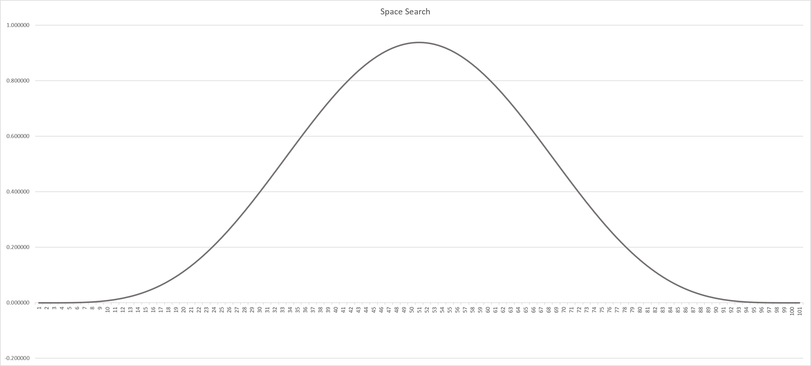

Function Optimization
Definition
This is a simple case of applying a genetic algorithm to optimize a function in order to find the highest value return. The problem consist into maximize a function by systematically choosing double values from a set.
Model
What are the values for the parameters x and y to find the highest value for the function F(x, y). the set of numbers is composed by double between 0 and 1 with 15 decimals: 0.000000000000000, If we round the values to 3 decimals the problem it becomes more easy, because we are looking for the parameters x and y: 0.500000000000000
The function to optimize as follow.
F(x,y) = 15 * x * y * (1 - x) * (1 - y) * Sin(PI * x) * Sin(PI * y)
The space search is represented by the following diagram. The maximum values 
Fitness Function
Fitness function description. Since we only have 2 parameters, the chromosome is composed by 2 DNAs. One for the parameter x and one for the parameter y.
x = cr.GetDNA(0);
y = cr.GetDNA(1);
cr.Fitness = 15 * x * y * (1 - x) * (1 - y) * Math.Sin(Math.PI * x) * Math.Sin(Math.PI * y);
Architecture
In the following table we will breakdown the problem in steps. We are going to understand what kind of algorithms we need, and general comments.
| Task | Algorithm | Comments |
|---|---|---|
| generate a population | Population class | Is composed by Chromosome objects |
| Evaluate the individuals | Fitness method | Define a Fitness method to test how well the GAs is doing it's work. |
| Select the top ranked individuals | NaturalSelection class | We are going to use this class and the RouletteWheel method to select the most individuals in the population |
| Crossover the selected individuals | Crossover class | In this step, we are going to find 2 parents and apply crossover to create inherence. a child. |
| Apply Mutation to the inheritance | Mutation class | The mutation will be applied to an small amount of chromosomes in the population, nevertheless for this case the mutation will generate a complete new DNA. |
| Print data | PrintData() | Display the GA progress to understand the behavior. |
| Repeat up to find a solution | do while {} | We need a loop to repeat all the steps up to met some condition. |
Now, we have all the necessary ingredients to build our GA and defined what we need from each of them.
Code
Here we will define the methods to implement the GA. The first method initialize the population and define the architecture for the Genetic Algorithm. The second method performs the evaluation and the third method print the results in a windows console.
The population and the string target are defined.
private static int popSize = 100;
private static Population<double> pop = new Population<double>(popSize);
The for loop fill up the population with the chromosomes. The do-while loop it's the genetic algorithm itself: Evaluate, Natural selection, Crossover and Mutation.
static void Main(string[] args)
{
float mutRate = 0.025f;
double best;
int c = 1;
double target = 0.93749;
for (int i = 0; i < popSize; i++)
pop.Add(new Chromosome<double>(Rand.RandomNumbers(2, 0.0, 1.0)));
do
{
Evaluation();
best = pop.Higher().Fitness;
PrintData(pop.Higher(), c, mutRate, pop.FitnessAverage(), target);
Population<double> matPool = NaturalSelection<double>.RouletteWheelNonPolinomicMin(pop, 30);
pop = Crossover<double>.SinglePointCrossover(matPool, popSize, 1);
pop = Mutation.Number(pop, mutRate, 0.0, 1.00);
c++;
} while (best <= target);
Console.ReadLine();
}
This function calculate the fitness for each chromosome.
private static void Evaluation()
{
double x, y;
foreach (Chromosome<double> cr in pop)
{
x = cr.GetDNA(0);
y = cr.GetDNA(1);
cr.Fitness = 15 * x * y * (1 - x) * (1 - y) * Math.Sin(Math.PI * x) * Math.Sin(Math.PI * y);
}
}
This function prints the results in a windows console
private static void PrintData(Chromosome<double> best, int genCount, float mut, double ave, double th)
{
Console.SetCursorPosition(0, 1);
Console.Write(" Best individual: ");
Console.WriteLine($" Param X: {best.GetDNA(0).ToString()}, Param Y: {best.GetDNA(1).ToString()}");
Console.WriteLine(" ");
Console.WriteLine(" ////////////// GA data");
Console.WriteLine(" Generation: " + genCount.ToString());
Console.WriteLine(" Target: " + th.ToString());
Console.WriteLine(" Highest fitness: " + best.Fitness.ToString());
Console.WriteLine(" Average fitness: " + ave.ToString());
Console.WriteLine($" Difference: {best.Fitness - th} ");
Console.WriteLine(" Mutation Rate: " + mut.ToString());
}
Results
The GA is able to find the hidden target with a 200 size population in around 29 secs.
- This exercise is based in the chapter 18: Optimization Methods from the book: "Numerical Methods,Algorithms and Tools in C#", Waldemar Dos Passos, 2010, Taylor and Francis. ISBN 978-0-8493-7479-1
- To download the experiment from: Function Optimization
- The video below, is an example result of the GA executed:
The GA implementation video: